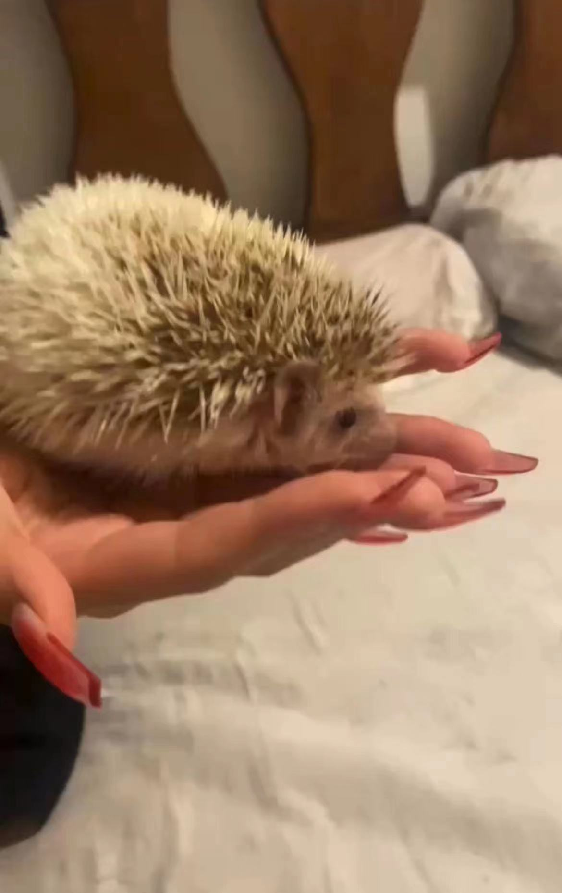
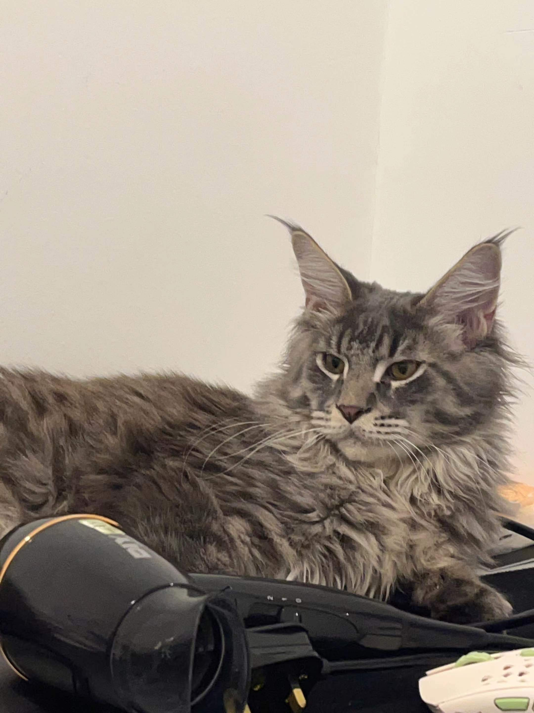

I am 21 years old now, and I am from China, and it is a challenge for me to come to Malaysia to study because my language is not very good, but I believe everything will get better slowly.
I hate all bitter foods, so the store I hate the most is Starbucks, because I think all the drinks in Starbucks are bitter, including Frappuccino, and I think the cakes in Starbucks are not good.
I love to eat desserts, such as chocolate cake, donuts and cheesecake, etc., so I came to Auntie Anne's, my current favorite in Malaysia, it is really delicious!
Alphard
I like small animals very much, but when I was in China, my parents were busy and often away, so no one could take care of pets, but after I came to Malaysia, I would go home every day, and I felt very lonely.
so I Raised my first pet, he is a hedgehog, I named him Alphard, he is very cute, but also very picky eater, he only likes to eat one kind of food, and he doesn't like to be in contact with me.
uu
Then one day I was scrolling through Facebook when I was bored, and I saw a picture of a kitten, and I fell in love with the kitten at first sight, so I immediately contacted the seller, and took the cat home, The name of this kitten is uu, uu is really cute and clingy, he has brought me a lot of emotional help, uu will always accompany me to various places in the world.
